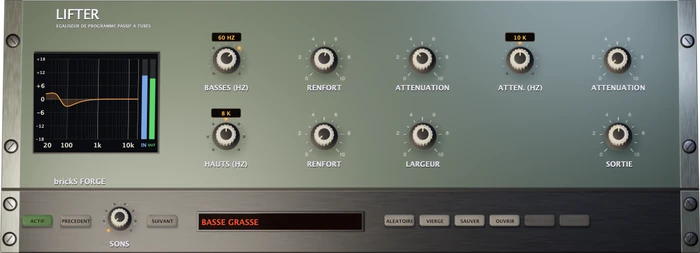
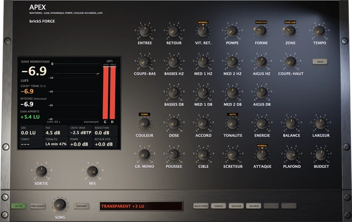
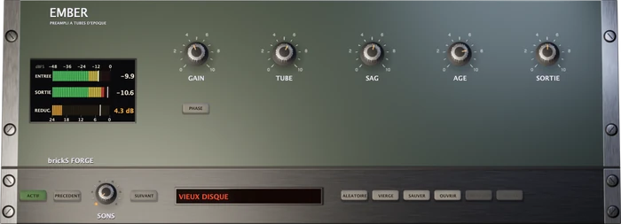
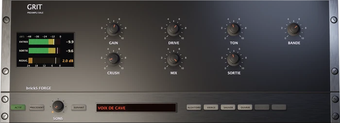

Forge Studio
Du premier kick au morceau fini, dans une seule fenêtre.
Un studio qui tient dans une application. Juste ce qu’il faut pour travailler sans se rendre fou : on ne passe pas son temps à configurer, on fait de la musique.
49 € TTC, une fois, avec toute la gamme Forge incluse.












Forge Studio
Un studio qui tient dans une application
Forge Studio est un studio qui tient dans une application. La vue principale est une table de mixage : une tranche par piste, des groupes, des retours d’effets, un master. Un clic sur une tranche ouvre le plug-in ou le séquenceur de la piste, et c’est tout : pas de cent menus, pas de réglages qui se cachent.
Les plug-ins de la gamme Forge sont dans l’application : synthés, basses, boîtes à rythmes, effets, compresseurs, égaliseurs. On les choisit dans l’accueil, un appui les pose sur la piste, sans scan ni fenêtre de gestion de plug-ins. On joue au clavier, on enregistre, on mixe, on exporte.
Trois points forts
Simple
Une vue principale, un séquenceur par piste : on fait de la musique, pas de la configuration.
Tout Forge dedans
Les instruments, les effets et la dynamique de la gamme Forge sont déjà dans l’application.
Pensé pour le beat
Boîtes à rythmes qui suivent l’horloge commune, hauteur par note, enregistrement au clavier : l’outil va au rythme de l’idée.
Mode d’emploi
Comment l’utiliser
Ouvrez un projet, choisissez un synthé ou une boîte à rythmes dans l’accueil : il se pose sur une piste. Armez la piste, jouez au clavier de l’ordinateur ou à un clavier MIDI, appuyez sur REC. Un clic sur SEQ ouvre le séquenceur de la piste pour corriger les notes, la hauteur, l’automation.
Pour le mix, retournez à la table : faders, pan, mute, solo, groupes, retours d’effets. Quand c’est prêt, l’export donne le mixage complet en WAV 24 bits, queues d’effets comprises.
Des idées pour démarrer
- Un beat du début à la fin : une boîte à rythmes, une basse, un sample, un bus de batterie compressé.
- Une démo de voix : une piste, un préampli, un compresseur, une réverbe sur un retour.
- Une idée jouée au clavier : un synthé, un enregistrement, une correction note par note dans le piano roll.
- Un mix propre : groupes pour les familles de sons, retours d’effets pour la réverbe et le délai.
Dedans
Ce que vous y trouvez
- Table de mixage
- Une tranche par piste, des groupes, des retours d’effets, un master, avec faders, pan, mute, solo, vumètres précis et un bouton mono pour vérifier la compatibilité.
- Séquenceur par piste
- Briques de notes, piano roll, hauteur par note, effets MIDI et automation. Une boîte à rythmes donne une ligne par pad.
- Accueil des plug-ins Forge
- Un synthé, un effet ou un compresseur se choisit dans l’accueil et se pose en un appui.
- Jouer et enregistrer
- Armez une piste, jouez, appuyez sur REC. Horloge commune : les boîtes à rythmes suivent lecture, arrêt et tempo du projet.
- Navigateur de sons
- Une banque classée par type (basses, leads, nappes, claviers, effets) et une balade libre dans vos dossiers ; glissez un son sur une piste pour le charger.
- Projets et export
- Un projet est un fichier, enregistré avec Cmd+S ; l’export donne le mixage complet en WAV 24 bits.
Pour qui
Pour qui
Pour le beatmaker qui veut un outil qui s’efface : assez pour finir un morceau, pas assez pour s’y perdre. Il convient autant à celui qui démarre qu’à celui qui veut tout faire sur un seul écran.
Fiche technique
- Format
- Application pour macOS
- Gamme Forge
- Tous les plug-ins Forge intégrés
- Accueil de plug-ins tiers
- Prévu pour la sortie
- Disponibilité
- Bientôt disponible
Dedans, tout Forge
La gamme Forge, embarquée en natif.
Pas de gestionnaire de plug-ins à ouvrir : les instruments et les effets Forge sont déjà dans l’application. Vous les retrouvez aussi en plug-ins AU et VST3 dans votre logiciel de musique habituel.
Prévu pour la sortie : l'accueil de vos propres plug-ins AU et VST3, à côté de la gamme Forge.


Une question de rythme
Pas d’usine à gaz.
Pas de cent menus, pas de réglages qui se cachent. La vue principale est la table de mixage : un clic sur une tranche, et vous ouvrez le plug-in ou le séquenceur de la piste.
- Une seule vue principale : la table de mixage
- Un séquenceur par piste, ouvert d’un clic
- Un plug-in posé en un appui depuis l’accueil
- Un export WAV 24 bits du mixage complet
Comparer
Quelle offre pour quoi ?
| Forge Studio | Pack plug-ins Forge | Gamme Comics | |
|---|---|---|---|
| Prix | 49 € TTC, une fois | 14,90 € TTC, une fois | Téléchargement direct sur le site |
| Disponibilité | Bientôt disponible | Disponible | Disponible |
| L’application Forge Studio | Oui | Non | Non |
| Plug-ins de la gamme Forge | Tous, inclus | Tous | Non |
| Plug-ins de la gamme Comics | Non | Non | Oui |
| Formats | Application, AU, VST3 | AU, VST3 | AU, VST3 |
| Essai | 14 jours, à la sortie | 14 jours, complet | Aucune clé à saisir |
TVA non applicable, art. 293 B du CGI Voir les conditions de vente.
Les deux offres
Forge Studio, ou les plug-ins seuls.
Forge Studio inclut tous les plug-ins Forge. Si vous n’avez besoin que des plug-ins, le pack à 14,90 € existe, sans le studio.
Forge Studio
Le studio, avec toute la gamme Forge dedans.
- Forge Studio : table de mixage, séquenceur par piste, export WAV
- Tous les plug-ins de la gamme Forge inclus, intégrés à l’application
- Les plug-ins Forge aussi en AU et VST3 dans votre logiciel de musique
- Licence à vie, essai de 14 jours
Pas encore en vente : aucun paiement n’est possible pour le moment. TVA non applicable, art. 293 B du CGI
Pack plug-ins Forge
Les plug-ins seuls, sans le studio.
- Tous les plug-ins de la gamme Forge en AU et VST3 pour macOS
- Forge Studio n’est pas compris
- Licence à vie, essai complet de 14 jours, sans compte
- Remboursé sous 30 jours si ça ne marche pas chez vous
Paiement sécurisé par Stripe, clé envoyée par e-mail. Conditions de vente · Remboursement. TVA non applicable, art. 293 B du CGI
Soyez prévenu le jour de la sortie.
Laissez votre adresse e-mail. Vous recevrez un seul message, quand Forge Studio sera prêt à être téléchargé. Aucune date n’est promise tant que ce n’est pas prêt.
Un seul e-mail, le jour de la sortie. Pas de newsletter, adresse jamais partagée. Confidentialité